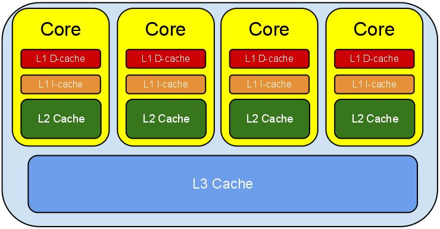
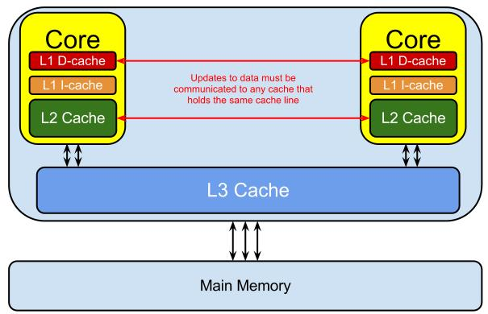
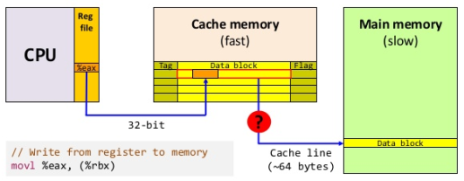

The CPU has several layers of cache between it and main memory (RAM), because even accessing main memory is too slow.
The closer the cache is to the CPU, the faster it is and the smaller it is. L1 cache is small and very fast, and right next to the core that uses it. L2 is bigger and slower, and still only used by a single core. L3 is more common with modern multi-core machines, and is bigger again, slower again, and shared across cores on a single socket. Finally you have main memory, which is shared across all cores and all sockets.
| Latency from CPU to… | Approx. number of CPU cycles | Approx. time in nanoseconds |
|---|---|---|
| Main memory | ~60-80ns | |
| QPI transit (between sockets, not drawn) | ~20ns | |
| L3 cache | ~40-45 cycles, | ~15ns |
| L2 cache | ~10 cycles, | ~3ns |
| L1 cache | ~3-4 cycles, | ~1ns |
| Register | 1 cycle |



(1) Cache lines
Now the interesting thing to note is that it’s not individual items that get stored in the cache - i.e. it’s not a single variable, a single pointer. The cache is made up of cache lines, typically 64 bytes, and it effectively references a location in main memory. A Java long is 8 bytes, so in a single cache line you could have 8 long variables.
参考 Dissecting the Disruptor: Why it’s so fast (part two) - Magic cache line padding
It is a basic Law of Computing that given a single CPU resource, executing A and B sequentially will always be faster than executing A and B “simultaneously” through time-slicing. Once the number of threads exceeds the number of CPU cores, you’re going slower by adding more threads, not faster.
Don’t be tricked into thinking, “SSDs are faster and therefore I can have more threads”. That is exactly 180 degrees backwards. Faster, no seeks, no rotational delays means less blocking and therefore fewer threads [closer to core count] will perform better than more threads. More threads only perform better when blocking creates opportunities for executing.
多个线程修改共享一个 Cache Line 的独立变量的时候，会造成这个 Cache Line 中的其他变量缓存失效，这被称之为 False sharing

在核心 1 上运行的线程想更新变量 X，同时核心2上的线程想要更新变量 Y。不幸的是，这两个变量在同一个缓存行中。每个线程都要去竞争缓存行的所有权来更新变量。如果核心 1 获得了所有权，缓存子系统将会使核心 2 中对应的缓存行失效。当核心 2 获得了所有权然后执行更新操作，核心 1 就要使自己对应的缓存行失效。这会来来回回的经过 L3 缓存，大大影响了性能。如果互相竞争的核心位于不同的插槽，就要额外横跨插槽 (socket interconnect) 连接，问题可能更加严重。

False sharing occurs when threads on different processors modify variables that reside on the same cache line. This invalidates the cache line and forces a memory update to maintain cache coherency.
(1) Java 6 通过填充缓存行 (padding the cache) 来避免:
|
|
(2) Java 7
It seems Java 7 got clever and eliminated or re-ordered the unused fields, thus re-introducing false sharing.
|
|
(3) Java 8 通过声明 sun.misc.Contended 注解加启动参数 -XX:-RestrictContended 来搞定:
|
|
参考 Java8 中用 sun.misc.Contended 避免伪共享(false sharing)
虽然 32 位使用较小的指针大小可以节约内存，但由于操作系统的寻址受限，它在缓冲区大小设置上存在固有的约束，理论上，每个进程在 32 为系统上的最大可用内存为 4GB，实际上在很多系统上这个数值很小。
关于磁盘，你需要关注磁盘读延迟 (每次读访问需要多长时间) 和 fsync 延迟 (每个 fsync 耗时多少)，大多数存储引擎是针对硬盘读写优化的，所以不要指望固态硬盘能够出现什么性能上的奇迹。
Hd(0,0) is the 1st partition of the 1st physical disk.Hd(0,1) is the 2nd partition of the 1st physical disk.I believe that
|
|
so on etc. etc. sdc = hd2 When it says sda1 that would be (hd0, 0) and sda2 (hd0, 1) and sda3 (hd0, 2) and sdb1 (hd1, 0) so on and so forth…